15 24 May 2027
15.1 Reboot Ler spread rates
(Rerun of analyses from 5 and 8 May)
Look at trends by rep:
ggplot(LerC_spread, aes(x = Generation, y = speed, color = Rep)) +
geom_point(position = "jitter") +
geom_smooth(method = "lm", se = FALSE) +
facet_wrap(~Gap)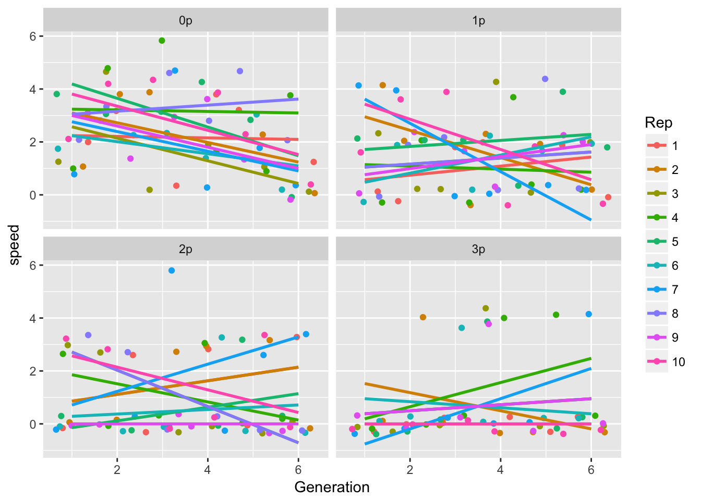
ggplot(LerC_spread, aes(x = Generation, y = speed)) +
geom_point(position = "jitter") +
geom_smooth() +
facet_wrap(~Gap)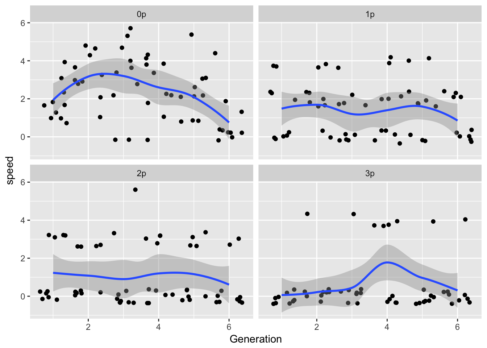
ggplot(LerC_spread, aes(x = Generation, y = speed)) +
geom_point(position = "jitter") +
geom_smooth(method = "gam", method.args = list(k = 4)) +
facet_wrap(~Gap)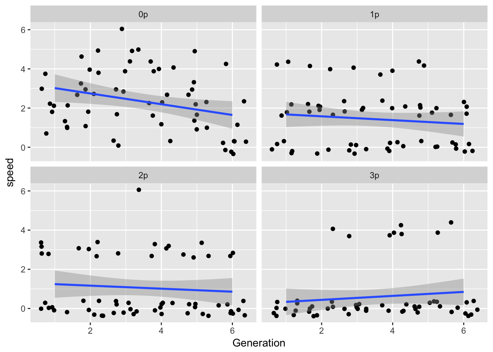
summary(lm(speed ~ Generation, data = filter(LerC_spread, Gap == "0p")))
Call:
lm(formula = speed ~ Generation, data = filter(LerC_spread, Gap ==
"0p"))
Residuals:
Min 1Q Median 3Q Max
-2.4705 -1.3090 0.0295 1.1224 3.5295
Coefficients:
Estimate Std. Error t value Pr(>|t|)
(Intercept) 3.2933 0.4609 7.145 1.67e-09 ***
Generation -0.2743 0.1183 -2.318 0.024 *
---
Signif. codes: 0 '***' 0.001 '**' 0.01 '*' 0.05 '.' 0.1 ' ' 1
Residual standard error: 1.566 on 58 degrees of freedom
Multiple R-squared: 0.08476, Adjusted R-squared: 0.06898
F-statistic: 5.371 on 1 and 58 DF, p-value: 0.02402library(mgcv)
summary(gam(speed ~ s(Generation, k = 4), data = filter(LerC_spread, Gap == "0p")))
Family: gaussian
Link function: identity
Formula:
speed ~ s(Generation, k = 4)
Parametric coefficients:
Estimate Std. Error t value Pr(>|t|)
(Intercept) 2.3333 0.1828 12.77 <2e-16 ***
---
Signif. codes: 0 '***' 0.001 '**' 0.01 '*' 0.05 '.' 0.1 ' ' 1
Approximate significance of smooth terms:
edf Ref.df F p-value
s(Generation) 2.223 2.597 7.506 0.000784 ***
---
Signif. codes: 0 '***' 0.001 '**' 0.01 '*' 0.05 '.' 0.1 ' ' 1
R-sq.(adj) = 0.239 Deviance explained = 26.7%
GCV = 2.1184 Scale est. = 2.0046 n = 60plot(gam(speed ~ s(Generation, k = 4), data = filter(LerC_spread, Gap == "0p")))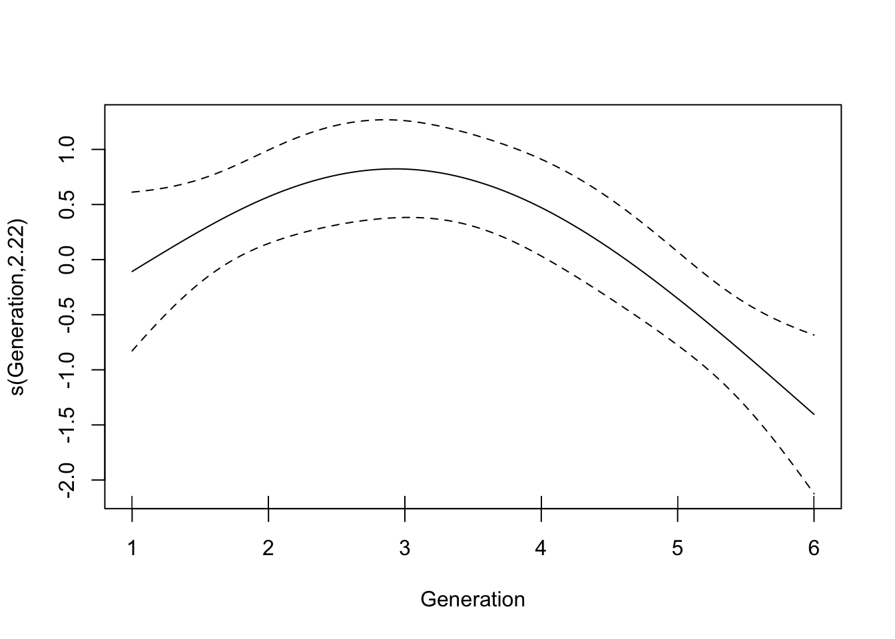
anova(gam(speed ~ s(Generation, k = 4), data = filter(LerC_spread, Gap == "0p")),
gam(speed ~ Generation, data = filter(LerC_spread, Gap == "0p")),
test = "Chisq") Analysis of Deviance Table
Model 1: speed ~ s(Generation, k = 4)
Model 2: speed ~ Generation
Resid. Df Resid. Dev Df Deviance Pr(>Chi)
1 56.403 113.82
2 58.000 142.17 -1.5975 -28.351 0.0004792 ***
---
Signif. codes: 0 '***' 0.001 '**' 0.01 '*' 0.05 '.' 0.1 ' ' 1This replicates the prior analysis exactly.
Now look at the autocorrelation and interaction analysis from 8 May:
m13 <- lm(speed ~ poly(Generation, 2) * Rep + speed_m1,
data = filter(LerC_spread, Gap == "0p"))
summary(m13)
Call:
lm(formula = speed ~ poly(Generation, 2) * Rep + speed_m1, data = filter(LerC_spread,
Gap == "0p"))
Residuals:
Min 1Q Median 3Q Max
-2.14668 -0.47051 0.02562 0.52439 2.46495
Coefficients:
Estimate Std. Error t value Pr(>|t|)
(Intercept) 3.054e+00 9.512e-01 3.211 0.0046 **
poly(Generation, 2)1 1.990e+00 7.837e+00 0.254 0.8023
poly(Generation, 2)2 -2.395e+00 7.431e+00 -0.322 0.7507
Rep2 4.945e-01 1.154e+00 0.429 0.6730
Rep3 1.295e-01 1.159e+00 0.112 0.9122
Rep4 2.280e+00 1.154e+00 1.976 0.0629 .
Rep5 6.689e-01 1.166e+00 0.574 0.5730
Rep6 -6.265e-01 1.150e+00 -0.545 0.5922
Rep7 1.540e-02 1.160e+00 0.013 0.9895
Rep8 1.467e+00 1.155e+00 1.270 0.2194
Rep9 -9.598e-01 1.150e+00 -0.835 0.4142
Rep10 8.141e-01 1.148e+00 0.709 0.4869
speed_m1 -4.215e-01 1.982e-01 -2.126 0.0468 *
poly(Generation, 2)1:Rep2 -1.014e+01 1.115e+01 -0.910 0.3745
poly(Generation, 2)2:Rep2 -5.019e+00 1.087e+01 -0.462 0.6495
poly(Generation, 2)1:Rep3 -1.910e+01 1.109e+01 -1.722 0.1012
poly(Generation, 2)2:Rep3 7.551e+00 1.057e+01 0.714 0.4838
poly(Generation, 2)1:Rep4 -1.356e+01 1.122e+01 -1.208 0.2417
poly(Generation, 2)2:Rep4 3.330e+00 1.155e+01 0.288 0.7762
poly(Generation, 2)1:Rep5 -3.324e+00 1.110e+01 -0.299 0.7678
poly(Generation, 2)2:Rep5 -8.064e+00 1.046e+01 -0.771 0.4502
poly(Generation, 2)1:Rep6 -3.761e+00 1.109e+01 -0.339 0.7382
poly(Generation, 2)2:Rep6 5.375e-14 1.044e+01 0.000 1.0000
poly(Generation, 2)1:Rep7 -1.072e+01 1.111e+01 -0.965 0.3467
poly(Generation, 2)2:Rep7 -3.057e+00 1.080e+01 -0.283 0.7801
poly(Generation, 2)1:Rep8 5.176e+00 1.121e+01 0.462 0.6496
poly(Generation, 2)2:Rep8 -7.049e+00 1.053e+01 -0.669 0.5114
poly(Generation, 2)1:Rep9 2.805e+00 1.108e+01 0.253 0.8028
poly(Generation, 2)2:Rep9 -1.315e+01 1.057e+01 -1.244 0.2287
poly(Generation, 2)1:Rep10 -6.363e+00 1.115e+01 -0.571 0.5750
poly(Generation, 2)2:Rep10 -1.054e+01 1.087e+01 -0.970 0.3444
---
Signif. codes: 0 '***' 0.001 '**' 0.01 '*' 0.05 '.' 0.1 ' ' 1
Residual standard error: 1.43 on 19 degrees of freedom
(10 observations deleted due to missingness)
Multiple R-squared: 0.7304, Adjusted R-squared: 0.3048
F-statistic: 1.716 on 30 and 19 DF, p-value: 0.1102car::Anova(m13)Anova Table (Type II tests)
Response: speed
Sum Sq Df F value Pr(>F)
poly(Generation, 2) 46.959 2 11.4785 0.0005389 ***
Rep 32.487 9 1.7646 0.1422649
speed_m1 9.249 1 4.5217 0.0467938 *
poly(Generation, 2):Rep 29.613 18 0.8043 0.6761230
Residuals 38.865 19
---
Signif. codes: 0 '***' 0.001 '**' 0.01 '*' 0.05 '.' 0.1 ' ' 1Drop the interaction:
m14 <- lm(speed ~ poly(Generation, 2) + Rep + speed_m1,
data = filter(LerC_spread, Gap == "0p"))
summary(m14)
Call:
lm(formula = speed ~ poly(Generation, 2) + Rep + speed_m1, data = filter(LerC_spread,
Gap == "0p"))
Residuals:
Min 1Q Median 3Q Max
-2.89320 -0.68615 -0.06304 0.68486 2.49198
Coefficients:
Estimate Std. Error t value Pr(>|t|)
(Intercept) 2.9649 0.7018 4.225 0.00015 ***
poly(Generation, 2)1 -4.2553 2.4272 -1.753 0.08786 .
poly(Generation, 2)2 -5.5072 2.3684 -2.325 0.02565 *
Rep2 0.2662 0.8609 0.309 0.75893
Rep3 -0.7985 0.8653 -0.923 0.36206
Rep4 1.5985 0.8653 1.847 0.07269 .
Rep5 0.7309 0.8738 0.836 0.40831
Rep6 -0.7323 0.8626 -0.849 0.40133
Rep7 -0.2662 0.8609 -0.309 0.75893
Rep8 1.7970 0.8797 2.043 0.04824 *
Rep9 -0.4000 0.8604 -0.465 0.64473
Rep10 0.8647 0.8690 0.995 0.32619
speed_m1 -0.3309 0.1526 -2.169 0.03660 *
---
Signif. codes: 0 '***' 0.001 '**' 0.01 '*' 0.05 '.' 0.1 ' ' 1
Residual standard error: 1.36 on 37 degrees of freedom
(10 observations deleted due to missingness)
Multiple R-squared: 0.5251, Adjusted R-squared: 0.371
F-statistic: 3.409 on 12 and 37 DF, p-value: 0.002013car::Anova(m14)Anova Table (Type II tests)
Response: speed
Sum Sq Df F value Pr(>F)
poly(Generation, 2) 46.959 2 12.6865 6.372e-05 ***
Rep 32.487 9 1.9504 0.07456 .
speed_m1 8.705 1 4.7036 0.03660 *
Residuals 68.478 37
---
Signif. codes: 0 '***' 0.001 '**' 0.01 '*' 0.05 '.' 0.1 ' ' 1So, in conclusion: weak evidence for among-Rep differences in means, but strong evidence for negative autocorrelation. Note that this autocorrelation should act to slow the rate at which the variance in cumulative spread increases with time.
Let’s check out the other landscapes:
m24 <- lm(speed ~ Gen + Rep + speed_m1,
data = filter(LerC_spread, Gap == "1p"))
m34 <- lm(speed ~ Gen + Rep + speed_m1,
data = filter(LerC_spread, Gap == "2p"))
m44 <- lm(speed ~ Gen + Rep + speed_m1,
data = filter(LerC_spread, Gap == "3p"))
summary(m24)
Call:
lm(formula = speed ~ Gen + Rep + speed_m1, data = filter(LerC_spread,
Gap == "1p"))
Residuals:
Min 1Q Median 3Q Max
-1.9393 -1.0203 -0.2807 0.7435 3.0813
Coefficients:
Estimate Std. Error t value Pr(>|t|)
(Intercept) 1.939e+00 8.046e-01 2.410 0.0213 *
Gen3 -6.966e-01 6.728e-01 -1.035 0.3076
Gen4 -6.345e-01 6.671e-01 -0.951 0.3481
Gen5 -2.000e-01 6.664e-01 -0.300 0.7658
Gen6 -1.131e+00 6.692e-01 -1.690 0.0999 .
Rep2 1.379e-01 9.504e-01 0.145 0.8855
Rep3 -1.100e-15 9.424e-01 0.000 1.0000
Rep4 -1.008e-15 9.424e-01 0.000 1.0000
Rep5 9.379e-01 9.504e-01 0.987 0.3305
Rep6 4.000e-01 9.424e-01 0.424 0.6738
Rep7 -3.310e-01 9.444e-01 -0.351 0.7280
Rep8 4.690e-01 9.444e-01 0.497 0.6226
Rep9 4.000e-01 9.424e-01 0.424 0.6738
Rep10 1.007e+00 9.604e-01 1.048 0.3017
speed_m1 -1.724e-01 1.543e-01 -1.117 0.2715
---
Signif. codes: 0 '***' 0.001 '**' 0.01 '*' 0.05 '.' 0.1 ' ' 1
Residual standard error: 1.49 on 35 degrees of freedom
(10 observations deleted due to missingness)
Multiple R-squared: 0.1932, Adjusted R-squared: -0.1295
F-statistic: 0.5988 on 14 and 35 DF, p-value: 0.8474summary(m34)
Call:
lm(formula = speed ~ Gen + Rep + speed_m1, data = filter(LerC_spread,
Gap == "2p"))
Residuals:
Min 1Q Median 3Q Max
-2.9139 -0.8927 -0.3292 0.9515 3.3861
Coefficients:
Estimate Std. Error t value Pr(>|t|)
(Intercept) 2.206e+00 8.573e-01 2.573 0.0145 *
Gen3 -3.000e-01 7.061e-01 -0.425 0.6736
Gen4 -5.386e-02 7.076e-01 -0.076 0.9398
Gen5 3.010e-16 7.061e-01 0.000 1.0000
Gen6 -6.000e-01 7.061e-01 -0.850 0.4013
Rep2 1.077e-01 1.003e+00 0.107 0.9151
Rep3 -1.200e+00 9.986e-01 -1.202 0.2376
Rep4 -1.200e+00 9.986e-01 -1.202 0.2376
Rep5 -1.308e+00 1.003e+00 -1.304 0.2007
Rep6 -1.308e+00 1.003e+00 -1.304 0.2007
Rep7 7.077e-01 1.003e+00 0.706 0.4850
Rep8 -1.200e+00 9.986e-01 -1.202 0.2376
Rep9 -2.015e+00 1.015e+00 -1.985 0.0550 .
Rep10 -4.923e-01 1.003e+00 -0.491 0.6266
speed_m1 -1.795e-01 1.524e-01 -1.178 0.2469
---
Signif. codes: 0 '***' 0.001 '**' 0.01 '*' 0.05 '.' 0.1 ' ' 1
Residual standard error: 1.579 on 35 degrees of freedom
(10 observations deleted due to missingness)
Multiple R-squared: 0.2666, Adjusted R-squared: -0.02679
F-statistic: 0.9087 on 14 and 35 DF, p-value: 0.558summary(m44)
Call:
lm(formula = speed ~ Gen + Rep + speed_m1, data = filter(LerC_spread,
Gap == "3p"))
Residuals:
Min 1Q Median 3Q Max
-1.9660 -0.6326 -0.5617 0.2950 3.4950
Coefficients:
Estimate Std. Error t value Pr(>|t|)
(Intercept) -3.660e-01 8.802e-01 -0.416 0.6804
Gen3 7.092e-02 7.694e-01 0.092 0.9271
Gen4 1.404e+00 7.694e-01 1.825 0.0776 .
Gen5 2.837e-01 8.417e-01 0.337 0.7384
Gen6 7.092e-02 7.694e-01 0.092 0.9271
Rep2 9.277e-01 1.038e+00 0.894 0.3782
Rep3 9.277e-01 1.038e+00 0.894 0.3782
Rep4 1.855e+00 1.073e+00 1.728 0.0939 .
Rep5 9.277e-01 1.038e+00 0.894 0.3782
Rep6 9.277e-01 1.038e+00 0.894 0.3782
Rep7 8.000e-01 1.025e+00 0.780 0.4412
Rep9 9.277e-01 1.038e+00 0.894 0.3782
Rep10 -8.426e-16 1.025e+00 0.000 1.0000
speed_m1 -1.596e-01 1.983e-01 -0.805 0.4272
---
Signif. codes: 0 '***' 0.001 '**' 0.01 '*' 0.05 '.' 0.1 ' ' 1
Residual standard error: 1.621 on 31 degrees of freedom
(9 observations deleted due to missingness)
Multiple R-squared: 0.2256, Adjusted R-squared: -0.0991
F-statistic: 0.6948 on 13 and 31 DF, p-value: 0.7534car::Anova(m24)Anova Table (Type II tests)
Response: speed
Sum Sq Df F value Pr(>F)
Gen 7.794 4 0.8776 0.4873
Rep 7.984 9 0.3996 0.9268
speed_m1 2.772 1 1.2485 0.2715
Residuals 77.708 35 car::Anova(m34)Anova Table (Type II tests)
Response: speed
Sum Sq Df F value Pr(>F)
Gen 2.708 4 0.2715 0.8943
Rep 28.733 9 1.2805 0.2819
speed_m1 3.458 1 1.3869 0.2469
Residuals 87.262 35 car::Anova(m44)Anova Table (Type II tests)
Response: speed
Sum Sq Df F value Pr(>F)
Gen 12.533 4 1.1918 0.3339
Rep 10.906 8 0.5186 0.8332
speed_m1 1.702 1 0.6475 0.4272
Residuals 81.498 31 Nothing to see here, folks!
The pattern of autocorrelation should, I think, fall into the category of something that we want the model to reproduce.
And fortunately, nothing has changed from the prior analysis.
15.1.1 Ler Cumulative spread
And finally double check the cumulative spread plots:
Let’s calculate the means and variances of cumulative spread:
cum_spread_stats <- group_by(LerC_spread, Gap, Gen, Generation) %>%
summarise(mean_spread = mean(Furthest),
var_spread = var(Furthest),
CV_spread = sqrt(var_spread)/mean_spread
)And now plot the results:
ggplot(aes(x = Generation, y = mean_spread, color = Gap), data = cum_spread_stats) +
geom_point() + geom_smooth(method = "lm")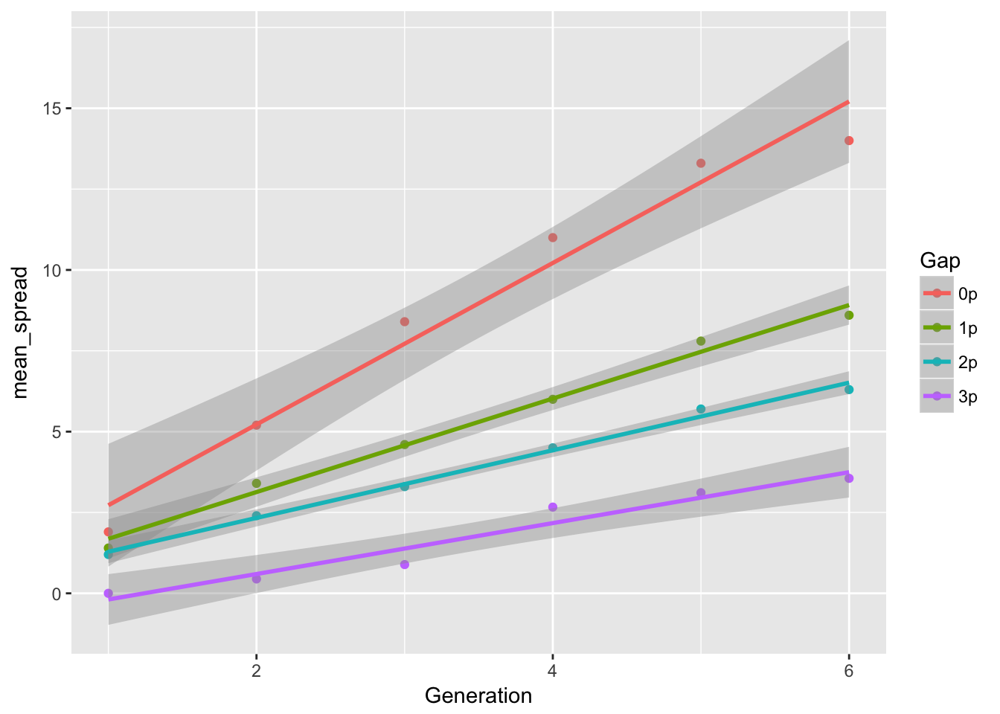
ggplot(aes(x = Generation, y = var_spread, color = Gap), data = cum_spread_stats) +
geom_point() + geom_line()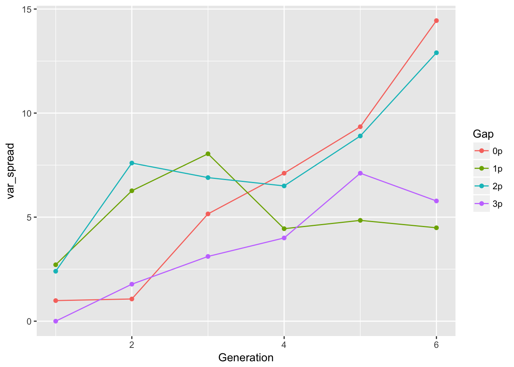
ggplot(aes(x = Generation, y = CV_spread, color = Gap), data = cum_spread_stats) +
geom_point() + geom_line()Warning: Removed 1 rows containing missing values (geom_point).Warning: Removed 1 rows containing missing values (geom_path).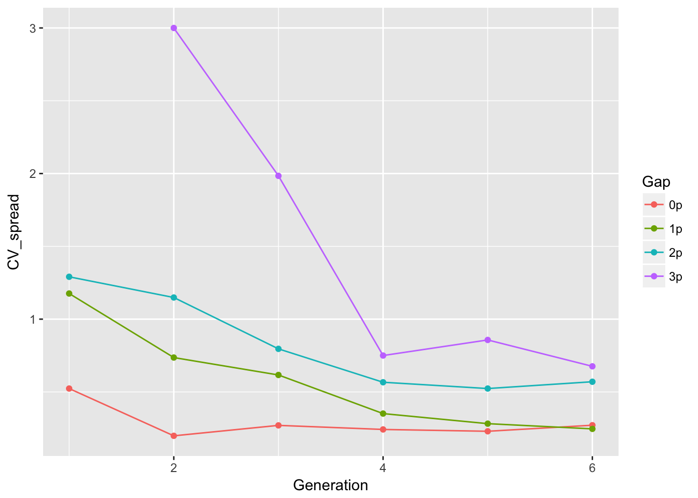 This looks just like the previous results—repeating my previous summary,
The linear approximation to mean spread is pretty good, although we see a dip in generation 6, as expected from the reduced seed production, and even without gen 6, the continuous runways seem to be decelerating. The ranking between landscapes makes sense. The variances are rather more over the map, although we don’t have confidence intervals on them. But exept for 1-pot gaps, we can squint and imagine that the variances are linear in time. Note, however, that with only 6 generations we’re not going to easily detect nonlinearities. I don’t know that the CVs tell us much.
It really does seem relevant to do the bootstrapping, to see whether the (rather nonsystematic) patterns in the cumulative variance vs. time are real.
15.2 Reboot spread analysis of evolution experiments
(From 10 May)
Let’s calculate the means and variances of cumulative spread:
cum_spread_stats <- group_by(RIL_spread, Treatment, Gap, Gen, Generation) %>%
summarise(mean_spread = mean(Furthest),
var_spread = var(Furthest),
CV_spread = sqrt(var_spread)/mean_spread
)And now plot the results:
ggplot(aes(x = Generation, y = mean_spread, color = Treatment), data = cum_spread_stats) +
geom_point() + geom_line() + facet_wrap(~ Gap)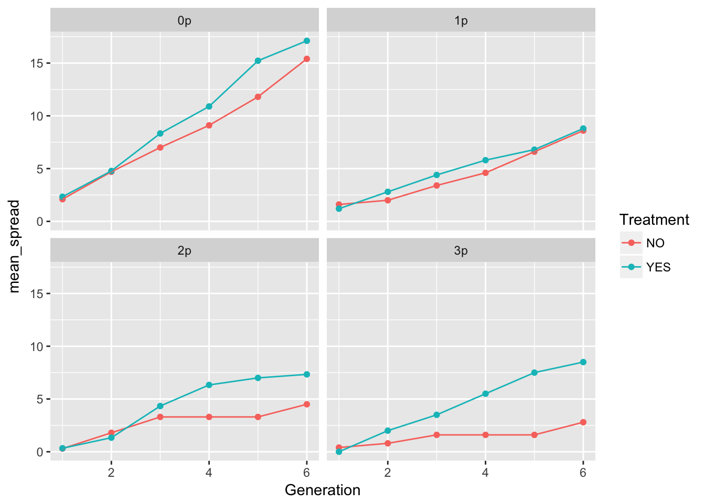
ggplot(aes(x = Generation, y = var_spread, color = Treatment), data = cum_spread_stats) +
geom_point() + geom_line() + facet_wrap(~ Gap)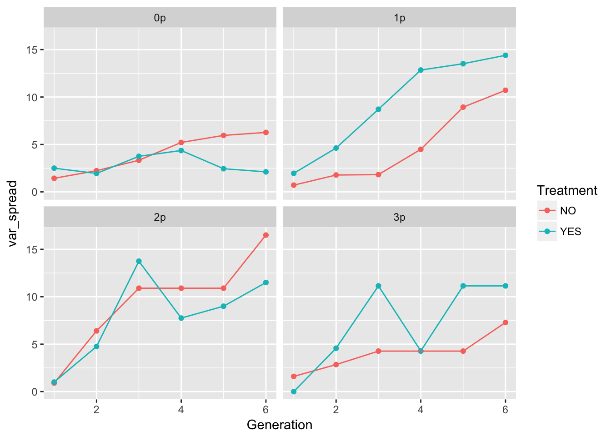
ggplot(aes(x = Generation, y = CV_spread, color = Treatment), data = cum_spread_stats) +
geom_point() + geom_line() + facet_wrap(~ Gap)Warning: Removed 1 rows containing missing values (geom_point).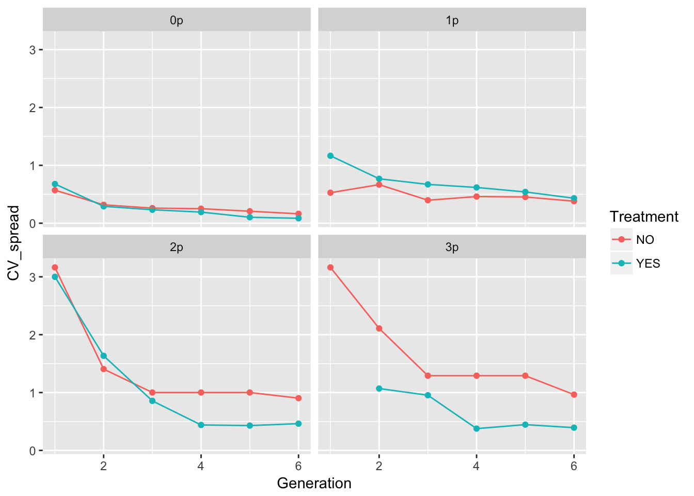
The patterns in the mean are probably not overly distinguishable from linear, although I’d want to see CIs.
Let’s look at per-generation spread.
speed_stats <- group_by(RIL_spread, Treatment, Gap, Gen, Generation) %>%
summarise(mean_spread = mean(speed),
var_spread = var(speed),
CV_spread = sqrt(var_spread)/mean_spread
)And now plot the results:
ggplot(aes(x = Generation, y = mean_spread, color = Treatment), data = speed_stats) +
geom_point() + geom_line() + facet_wrap(~ Gap)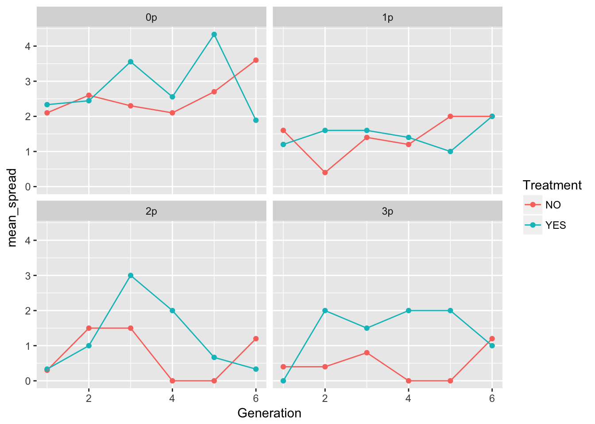
ggplot(aes(x = Generation, y = var_spread, color = Treatment), data = speed_stats) +
geom_point() + geom_line() + facet_wrap(~ Gap)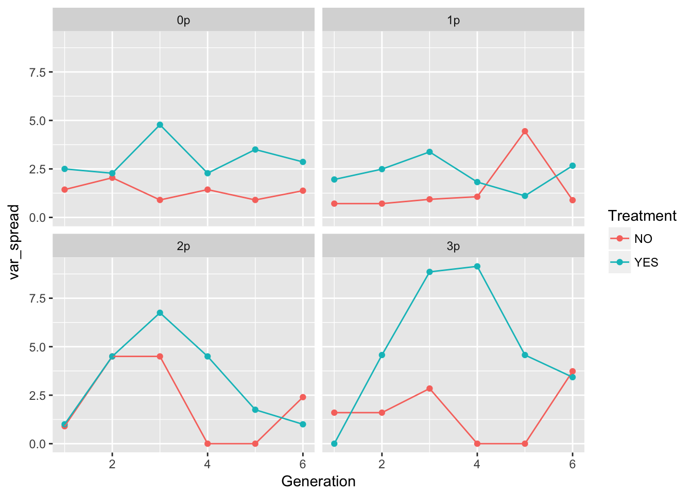
ggplot(aes(x = Generation, y = CV_spread, color = Treatment), data = speed_stats) +
geom_point() + geom_line() + facet_wrap(~ Gap)Warning: Removed 5 rows containing missing values (geom_point).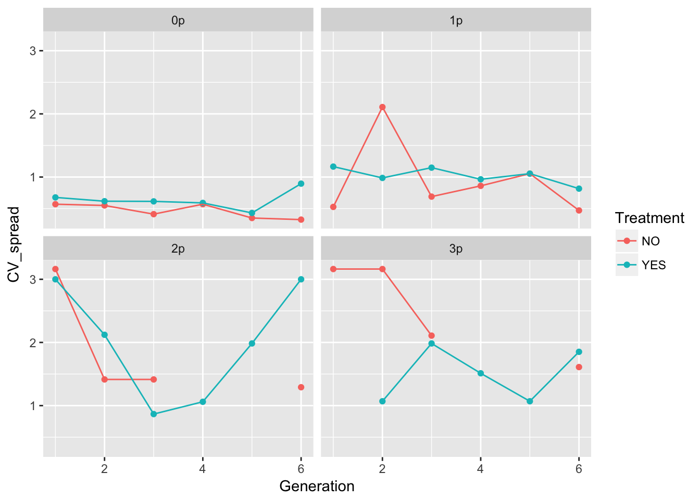 These plots look pretty similar (though not identical) to the second pass in the original analysis (after I dropped the problematic rep).
In 0p and 1p, the treatments look very similar. But I bet there will be differences in the autocorrelation structure. Let’s fit some models.
m1_0NO <- lm(speed ~ Gen + Rep + speed_m1, data = filter(RIL_spread, Gap == "0p", Treatment == "NO"))
summary(m1_0NO)
Call:
lm(formula = speed ~ Gen + Rep + speed_m1, data = filter(RIL_spread,
Gap == "0p", Treatment == "NO"))
Residuals:
Min 1Q Median 3Q Max
-1.67770 -0.77997 -0.03829 0.87593 1.87512
Coefficients:
Estimate Std. Error t value Pr(>|t|)
(Intercept) 2.47770 0.62701 3.952 0.000359 ***
Gen3 -0.17399 0.50495 -0.345 0.732474
Gen4 -0.44960 0.49971 -0.900 0.374424
Gen5 0.10000 0.49871 0.201 0.842237
Gen6 1.15121 0.50767 2.268 0.029631 *
Rep2 -0.14960 0.70599 -0.212 0.833417
Rep3 0.95282 0.73925 1.289 0.205887
Rep4 0.10081 0.70812 0.142 0.887615
Rep5 1.00161 0.71655 1.398 0.170964
Rep6 -0.04879 0.71164 -0.069 0.945728
Rep7 0.55121 0.71164 0.775 0.443804
Rep8 1.05201 0.72281 1.455 0.154458
Rep9 1.50242 0.73039 2.057 0.047199 *
Rep10 1.55282 0.73925 2.101 0.042955 *
speed_m1 -0.25201 0.15821 -1.593 0.120183
---
Signif. codes: 0 '***' 0.001 '**' 0.01 '*' 0.05 '.' 0.1 ' ' 1
Residual standard error: 1.115 on 35 degrees of freedom
(10 observations deleted due to missingness)
Multiple R-squared: 0.4056, Adjusted R-squared: 0.1678
F-statistic: 1.706 on 14 and 35 DF, p-value: 0.09938car::Anova(m1_0NO)Anova Table (Type II tests)
Response: speed
Sum Sq Df F value Pr(>F)
Gen 14.656 4 2.9464 0.03367 *
Rep 16.263 9 1.4531 0.20406
speed_m1 3.155 1 2.5372 0.12018
Residuals 43.525 35
---
Signif. codes: 0 '***' 0.001 '**' 0.01 '*' 0.05 '.' 0.1 ' ' 1m1_0YES <- lm(speed ~ Gen + Rep + speed_m1, data = filter(RIL_spread, Gap == "0p", Treatment == "YES"))
summary(m1_0YES)
Call:
lm(formula = speed ~ Gen + Rep + speed_m1, data = filter(RIL_spread,
Gap == "0p", Treatment == "YES"))
Residuals:
Min 1Q Median 3Q Max
-2.9829 -1.0494 -0.1159 1.3510 2.8446
Coefficients:
Estimate Std. Error t value Pr(>|t|)
(Intercept) 3.883e+00 1.038e+00 3.743 0.000742 ***
Gen3 1.160e+00 8.272e-01 1.403 0.170584
Gen4 6.541e-01 8.501e-01 0.769 0.447472
Gen5 1.988e+00 8.278e-01 2.401 0.022530 *
Gen6 3.329e-01 8.875e-01 0.375 0.710116
Rep2 -8.888e-01 1.110e+00 -0.801 0.429366
Rep4 -6.665e-01 1.114e+00 -0.598 0.553872
Rep5 -8.885e-02 1.110e+00 -0.080 0.936718
Rep6 -1.777e-01 1.111e+00 -0.160 0.874011
Rep7 -5.554e-01 1.117e+00 -0.497 0.622542
Rep8 -1.089e+00 1.110e+00 -0.981 0.334217
Rep9 1.566e-15 1.110e+00 0.000 1.000000
Rep10 -1.554e-01 1.117e+00 -0.139 0.890260
speed_m1 -4.442e-01 1.610e-01 -2.759 0.009630 **
---
Signif. codes: 0 '***' 0.001 '**' 0.01 '*' 0.05 '.' 0.1 ' ' 1
Residual standard error: 1.754 on 31 degrees of freedom
(9 observations deleted due to missingness)
Multiple R-squared: 0.4034, Adjusted R-squared: 0.1532
F-statistic: 1.612 on 13 and 31 DF, p-value: 0.135car::Anova(m1_0YES)Anova Table (Type II tests)
Response: speed
Sum Sq Df F value Pr(>F)
Gen 21.292 4 1.7295 0.16864
Rep 6.668 8 0.2708 0.97078
speed_m1 23.436 1 7.6148 0.00963 **
Residuals 95.408 31
---
Signif. codes: 0 '***' 0.001 '**' 0.01 '*' 0.05 '.' 0.1 ' ' 1This is getting different. Let’s try some models with continuous Generation:
m1_0NO <- lm(speed ~ poly(Generation, 2) + Rep + speed_m1,
data = filter(RIL_spread, Gap == "0p", Treatment == "NO"))
summary(m1_0NO)
Call:
lm(formula = speed ~ poly(Generation, 2) + Rep + speed_m1, data = filter(RIL_spread,
Gap == "0p", Treatment == "NO"))
Residuals:
Min 1Q Median 3Q Max
-1.73288 -0.79389 -0.01207 0.84396 1.91342
Coefficients:
Estimate Std. Error t value Pr(>|t|)
(Intercept) 2.71691 0.55729 4.875 2.07e-05 ***
poly(Generation, 2)1 0.30080 1.89328 0.159 0.8746
poly(Generation, 2)2 4.51283 1.78375 2.530 0.0158 *
Rep2 -0.15343 0.69108 -0.222 0.8255
Rep3 0.92600 0.72207 1.282 0.2077
Rep4 0.09314 0.69306 0.134 0.8938
Rep5 0.98628 0.70091 1.407 0.1677
Rep6 -0.06029 0.69634 -0.087 0.9315
Rep7 0.53971 0.69634 0.775 0.4432
Rep8 1.03286 0.70675 1.461 0.1523
Rep9 1.47943 0.71381 2.073 0.0452 *
Rep10 1.52600 0.72207 2.113 0.0414 *
speed_m1 -0.23286 0.15103 -1.542 0.1316
---
Signif. codes: 0 '***' 0.001 '**' 0.01 '*' 0.05 '.' 0.1 ' ' 1
Residual standard error: 1.092 on 37 degrees of freedom
(10 observations deleted due to missingness)
Multiple R-squared: 0.3978, Adjusted R-squared: 0.2025
F-statistic: 2.037 on 12 and 37 DF, p-value: 0.0486car::Anova(m1_0NO)Anova Table (Type II tests)
Response: speed
Sum Sq Df F value Pr(>F)
poly(Generation, 2) 14.088 2 5.9110 0.00592 **
Rep 15.973 9 1.4893 0.18820
speed_m1 2.833 1 2.3772 0.13163
Residuals 44.093 37
---
Signif. codes: 0 '***' 0.001 '**' 0.01 '*' 0.05 '.' 0.1 ' ' 1m1_0YES <- lm(speed ~ poly(Generation, 2) + Rep + speed_m1,
data = filter(RIL_spread, Gap == "0p", Treatment == "YES"))
summary(m1_0YES)
Call:
lm(formula = speed ~ poly(Generation, 2) + Rep + speed_m1, data = filter(RIL_spread,
Gap == "0p", Treatment == "YES"))
Residuals:
Min 1Q Median 3Q Max
-2.8015 -1.1626 -0.3335 1.1958 2.9824
Coefficients:
Estimate Std. Error t value Pr(>|t|)
(Intercept) 4.591e+00 9.727e-01 4.720 4.2e-05 ***
poly(Generation, 2)1 5.606e+00 3.155e+00 1.777 0.08480 .
poly(Generation, 2)2 -4.831e+00 2.924e+00 -1.652 0.10799
Rep2 -9.053e-01 1.129e+00 -0.802 0.42827
Rep4 -7.159e-01 1.132e+00 -0.632 0.53153
Rep5 -1.053e-01 1.129e+00 -0.093 0.92623
Rep6 -2.106e-01 1.130e+00 -0.186 0.85329
Rep7 -6.212e-01 1.135e+00 -0.547 0.58790
Rep8 -1.105e+00 1.129e+00 -0.979 0.33459
Rep9 8.513e-16 1.128e+00 0.000 1.00000
Rep10 -2.212e-01 1.135e+00 -0.195 0.84668
speed_m1 -5.266e-01 1.566e-01 -3.363 0.00196 **
---
Signif. codes: 0 '***' 0.001 '**' 0.01 '*' 0.05 '.' 0.1 ' ' 1
Residual standard error: 1.784 on 33 degrees of freedom
(9 observations deleted due to missingness)
Multiple R-squared: 0.3432, Adjusted R-squared: 0.1242
F-statistic: 1.567 on 11 and 33 DF, p-value: 0.1549car::Anova(m1_0YES)Anova Table (Type II tests)
Response: speed
Sum Sq Df F value Pr(>F)
poly(Generation, 2) 11.668 2 1.8329 0.175855
Rep 6.826 8 0.2681 0.971930
speed_m1 35.996 1 11.3097 0.001965 **
Residuals 105.032 33
---
Signif. codes: 0 '***' 0.001 '**' 0.01 '*' 0.05 '.' 0.1 ' ' 1m1_0YES <- lm(speed ~ Generation + Rep + speed_m1,
data = filter(RIL_spread, Gap == "0p", Treatment == "YES"))
summary(m1_0YES)
Call:
lm(formula = speed ~ Generation + Rep + speed_m1, data = filter(RIL_spread,
Gap == "0p", Treatment == "YES"))
Residuals:
Min 1Q Median 3Q Max
-2.3642 -1.2625 -0.3097 1.4350 3.2240
Coefficients:
Estimate Std. Error t value Pr(>|t|)
(Intercept) 4.297e+00 1.159e+00 3.708 0.00074 ***
Generation 1.923e-01 2.037e-01 0.944 0.35188
Rep2 -9.097e-01 1.157e+00 -0.786 0.43718
Rep4 -7.292e-01 1.161e+00 -0.628 0.53400
Rep5 -1.097e-01 1.157e+00 -0.095 0.92500
Rep6 -2.195e-01 1.158e+00 -0.189 0.85085
Rep7 -6.390e-01 1.164e+00 -0.549 0.58654
Rep8 -1.110e+00 1.157e+00 -0.959 0.34430
Rep9 1.824e-16 1.157e+00 0.000 1.00000
Rep10 -2.390e-01 1.164e+00 -0.205 0.83852
speed_m1 -5.487e-01 1.599e-01 -3.431 0.00159 **
---
Signif. codes: 0 '***' 0.001 '**' 0.01 '*' 0.05 '.' 0.1 ' ' 1
Residual standard error: 1.829 on 34 degrees of freedom
(9 observations deleted due to missingness)
Multiple R-squared: 0.2889, Adjusted R-squared: 0.07969
F-statistic: 1.381 on 10 and 34 DF, p-value: 0.2305car::Anova(m1_0YES)Anova Table (Type II tests)
Response: speed
Sum Sq Df F value Pr(>F)
Generation 2.980 1 0.8909 0.351884
Rep 6.878 8 0.2570 0.975431
speed_m1 39.380 1 11.7738 0.001595 **
Residuals 113.720 34
---
Signif. codes: 0 '***' 0.001 '**' 0.01 '*' 0.05 '.' 0.1 ' ' 1So we get that the evolution treatment has negative autocorrelation but no time effect, whereas the no-evolution treatment has a quadratic time effect but no autocorrelation.
Let’s look at the rest of the landscapes.
m2_0NO <- lm(speed ~ poly(Generation, 2) + Rep + speed_m1,
data = filter(RIL_spread, Gap == "1p", Treatment == "NO"))
summary(m2_0NO)
Call:
lm(formula = speed ~ poly(Generation, 2) + Rep + speed_m1, data = filter(RIL_spread,
Gap == "1p", Treatment == "NO"))
Residuals:
Min 1Q Median 3Q Max
-2.71489 -0.58274 0.01871 0.55243 2.84783
Coefficients:
Estimate Std. Error t value Pr(>|t|)
(Intercept) 1.267502 0.575288 2.203 0.03388 *
poly(Generation, 2)1 5.782657 2.092024 2.764 0.00884 **
poly(Generation, 2)2 0.001457 2.059857 0.001 0.99944
Rep2 0.686016 0.773317 0.887 0.38075
Rep3 1.229024 0.785643 1.564 0.12625
Rep4 0.143008 0.765825 0.187 0.85289
Rep5 0.143008 0.765825 0.187 0.85289
Rep6 -0.256992 0.765825 -0.336 0.73909
Rep7 1.229024 0.785643 1.564 0.12625
Rep8 1.086016 0.773317 1.404 0.16855
Rep9 0.686016 0.773317 0.887 0.38075
Rep10 -1.086016 0.773317 -1.404 0.16855
speed_m1 -0.357520 0.154986 -2.307 0.02677 *
---
Signif. codes: 0 '***' 0.001 '**' 0.01 '*' 0.05 '.' 0.1 ' ' 1
Residual standard error: 1.207 on 37 degrees of freedom
(10 observations deleted due to missingness)
Multiple R-squared: 0.4012, Adjusted R-squared: 0.207
F-statistic: 2.066 on 12 and 37 DF, p-value: 0.0454car::Anova(m2_0NO)Anova Table (Type II tests)
Response: speed
Sum Sq Df F value Pr(>F)
poly(Generation, 2) 18.403 2 6.3170 0.004363 **
Rep 20.014 9 1.5267 0.174941
speed_m1 7.751 1 5.3213 0.026767 *
Residuals 53.895 37
---
Signif. codes: 0 '***' 0.001 '**' 0.01 '*' 0.05 '.' 0.1 ' ' 1m2_0YES <- lm(speed ~ poly(Generation, 2) + Rep + speed_m1,
data = filter(RIL_spread, Gap == "1p", Treatment == "YES"))
summary(m2_0YES)
Call:
lm(formula = speed ~ poly(Generation, 2) + Rep + speed_m1, data = filter(RIL_spread,
Gap == "1p", Treatment == "YES"))
Residuals:
Min 1Q Median 3Q Max
-2.7791 -0.9350 -0.1574 0.8140 3.1582
Coefficients:
Estimate Std. Error t value Pr(>|t|)
(Intercept) 0.99237 0.69218 1.434 0.1601
poly(Generation, 2)1 -1.26659 2.60077 -0.487 0.6291
poly(Generation, 2)2 2.01957 2.48615 0.812 0.4218
Rep2 1.42446 0.97112 1.467 0.1509
Rep3 0.54964 0.95827 0.574 0.5697
Rep4 0.07482 0.95049 0.079 0.9377
Rep5 0.14964 0.95827 0.156 0.8768
Rep6 1.34964 0.95827 1.408 0.1674
Rep7 1.64891 1.03772 1.589 0.1206
Rep8 2.37409 1.01111 2.348 0.0243 *
Rep9 0.87482 0.95049 0.920 0.3633
Rep10 0.54964 0.95827 0.574 0.5697
speed_m1 -0.18705 0.17598 -1.063 0.2947
---
Signif. codes: 0 '***' 0.001 '**' 0.01 '*' 0.05 '.' 0.1 ' ' 1
Residual standard error: 1.499 on 37 degrees of freedom
(10 observations deleted due to missingness)
Multiple R-squared: 0.2339, Adjusted R-squared: -0.01459
F-statistic: 0.9413 on 12 and 37 DF, p-value: 0.5184car::Anova(m2_0YES)Anova Table (Type II tests)
Response: speed
Sum Sq Df F value Pr(>F)
poly(Generation, 2) 1.487 2 0.3311 0.7202
Rep 22.920 9 1.1338 0.3646
speed_m1 2.537 1 1.1297 0.2947
Residuals 83.108 37 m2_0NO <- lm(speed ~ poly(Generation, 2) + Rep + speed_m1,
data = filter(RIL_spread, Gap == "2p", Treatment == "NO"))
summary(m2_0NO)
Call:
lm(formula = speed ~ poly(Generation, 2) + Rep + speed_m1, data = filter(RIL_spread,
Gap == "2p", Treatment == "NO"))
Residuals:
Min 1Q Median 3Q Max
-2.3582 -0.9472 -0.0689 0.4769 4.5809
Coefficients:
Estimate Std. Error t value Pr(>|t|)
(Intercept) 0.9925 0.7068 1.404 0.1686
poly(Generation, 2)1 -6.3086 2.6583 -2.373 0.0229 *
poly(Generation, 2)2 4.4654 2.6698 1.673 0.1029
Rep2 -0.6000 0.9690 -0.619 0.5396
Rep3 1.5067 1.0179 1.480 0.1473
Rep4 1.4045 0.9910 1.417 0.1648
Rep5 -0.6000 0.9690 -0.619 0.5396
Rep6 0.1022 0.9745 0.105 0.9170
Rep7 0.7022 0.9745 0.721 0.4757
Rep8 0.8045 0.9910 0.812 0.4221
Rep9 0.8045 0.9910 0.812 0.4221
Rep10 -0.6000 0.9690 -0.619 0.5396
speed_m1 -0.1704 0.1731 -0.984 0.3314
---
Signif. codes: 0 '***' 0.001 '**' 0.01 '*' 0.05 '.' 0.1 ' ' 1
Residual standard error: 1.532 on 37 degrees of freedom
(10 observations deleted due to missingness)
Multiple R-squared: 0.3146, Adjusted R-squared: 0.09233
F-statistic: 1.415 on 12 and 37 DF, p-value: 0.2027car::Anova(m2_0NO)Anova Table (Type II tests)
Response: speed
Sum Sq Df F value Pr(>F)
poly(Generation, 2) 13.360 2 2.8457 0.07086 .
Rep 24.258 9 1.1483 0.35548
speed_m1 2.274 1 0.9687 0.33139
Residuals 86.852 37
---
Signif. codes: 0 '***' 0.001 '**' 0.01 '*' 0.05 '.' 0.1 ' ' 1m2_0YES <- lm(speed ~ poly(Generation, 2) + Rep + speed_m1,
data = filter(RIL_spread, Gap == "2p", Treatment == "YES"))
summary(m2_0YES)
Call:
lm(formula = speed ~ poly(Generation, 2) + Rep + speed_m1, data = filter(RIL_spread,
Gap == "2p", Treatment == "YES"))
Residuals:
Min 1Q Median 3Q Max
-2.7756 -1.6122 -0.0111 1.1509 4.0250
Coefficients:
Estimate Std. Error t value Pr(>|t|)
(Intercept) 1.145e+00 9.297e-01 1.231 0.2268
poly(Generation, 2)1 2.677e+00 3.742e+00 0.716 0.4793
poly(Generation, 2)2 -9.610e+00 3.614e+00 -2.660 0.0120 *
Rep2 5.398e-16 1.266e+00 0.000 1.0000
Rep3 8.006e-01 1.270e+00 0.630 0.5329
Rep4 -8.006e-01 1.270e+00 -0.630 0.5329
Rep5 8.006e-01 1.270e+00 0.630 0.5329
Rep7 -8.006e-01 1.270e+00 -0.630 0.5329
Rep8 1.601e+00 1.282e+00 1.249 0.2206
Rep9 -5.473e-16 1.266e+00 0.000 1.0000
Rep10 8.006e-01 1.270e+00 0.630 0.5329
speed_m1 -3.343e-01 1.678e-01 -1.992 0.0547 .
---
Signif. codes: 0 '***' 0.001 '**' 0.01 '*' 0.05 '.' 0.1 ' ' 1
Residual standard error: 2.002 on 33 degrees of freedom
(9 observations deleted due to missingness)
Multiple R-squared: 0.3065, Adjusted R-squared: 0.07535
F-statistic: 1.326 on 11 and 33 DF, p-value: 0.2543car::Anova(m2_0YES)Anova Table (Type II tests)
Response: speed
Sum Sq Df F value Pr(>F)
poly(Generation, 2) 38.775 2 4.8352 0.01440 *
Rep 23.282 8 0.7258 0.66772
speed_m1 15.911 1 3.9683 0.05469 .
Residuals 132.317 33
---
Signif. codes: 0 '***' 0.001 '**' 0.01 '*' 0.05 '.' 0.1 ' ' 1m2_0NO <- lm(speed ~ poly(Generation, 2) + Rep + speed_m1,
data = filter(RIL_spread, Gap == "3p", Treatment == "NO"))
summary(m2_0NO)
Call:
lm(formula = speed ~ poly(Generation, 2) + Rep + speed_m1, data = filter(RIL_spread,
Gap == "3p", Treatment == "NO"))
Residuals:
Min 1Q Median 3Q Max
-1.9572 -0.6343 -0.1966 0.2101 3.2495
Coefficients:
Estimate Std. Error t value Pr(>|t|)
(Intercept) 9.520e-01 6.044e-01 1.575 0.124
poly(Generation, 2)1 -1.301e+00 2.274e+00 -0.572 0.571
poly(Generation, 2)2 2.980e+00 2.165e+00 1.376 0.177
Rep2 1.606e-01 8.432e-01 0.190 0.850
Rep3 -8.000e-01 8.297e-01 -0.964 0.341
Rep4 -8.000e-01 8.297e-01 -0.964 0.341
Rep5 -8.000e-01 8.297e-01 -0.964 0.341
Rep6 9.606e-01 8.432e-01 1.139 0.262
Rep7 -8.000e-01 8.297e-01 -0.964 0.341
Rep8 1.606e-01 8.432e-01 0.190 0.850
Rep9 -1.216e-16 8.297e-01 0.000 1.000
Rep10 -6.394e-01 8.432e-01 -0.758 0.453
speed_m1 -2.008e-01 1.879e-01 -1.068 0.292
Residual standard error: 1.312 on 37 degrees of freedom
(10 observations deleted due to missingness)
Multiple R-squared: 0.2462, Adjusted R-squared: 0.001712
F-statistic: 1.007 on 12 and 37 DF, p-value: 0.4621car::Anova(m2_0NO)Anova Table (Type II tests)
Response: speed
Sum Sq Df F value Pr(>F)
poly(Generation, 2) 3.518 2 1.0221 0.3698
Rep 15.658 9 1.0109 0.4491
speed_m1 1.964 1 1.1411 0.2923
Residuals 63.682 37 m2_0YES <- lm(speed ~ poly(Generation, 2) + Rep + speed_m1,
data = filter(RIL_spread, Gap == "3p", Treatment == "YES"))
summary(m2_0YES)
Call:
lm(formula = speed ~ poly(Generation, 2) + Rep + speed_m1, data = filter(RIL_spread,
Gap == "3p", Treatment == "YES"))
Residuals:
Min 1Q Median 3Q Max
-3.2641 -1.1870 -0.2878 1.0908 5.1321
Coefficients:
Estimate Std. Error t value Pr(>|t|)
(Intercept) 3.744e+00 9.449e-01 3.962 0.000443 ***
poly(Generation, 2)1 4.688e+00 3.527e+00 1.329 0.194157
poly(Generation, 2)2 -4.498e+00 3.219e+00 -1.398 0.172836
Rep2 -1.944e+00 1.251e+00 -1.554 0.131072
Rep3 -1.372e+00 1.235e+00 -1.111 0.275663
Rep4 -1.373e-15 1.229e+00 0.000 1.000000
Rep7 -5.718e-01 1.235e+00 -0.463 0.646748
Rep8 -1.372e+00 1.235e+00 -1.111 0.275663
Rep9 -2.744e+00 1.251e+00 -2.193 0.036444 *
Rep10 -2.744e+00 1.251e+00 -2.193 0.036444 *
speed_m1 -7.147e-01 1.447e-01 -4.940 3e-05 ***
---
Signif. codes: 0 '***' 0.001 '**' 0.01 '*' 0.05 '.' 0.1 ' ' 1
Residual standard error: 1.944 on 29 degrees of freedom
(8 observations deleted due to missingness)
Multiple R-squared: 0.503, Adjusted R-squared: 0.3316
F-statistic: 2.935 on 10 and 29 DF, p-value: 0.01141car::Anova(m2_0YES)Anova Table (Type II tests)
Response: speed
Sum Sq Df F value Pr(>F)
poly(Generation, 2) 8.499 2 1.1251 0.3384
Rep 39.412 7 1.4906 0.2097
speed_m1 92.175 1 24.4029 2.998e-05 ***
Residuals 109.539 29
---
Signif. codes: 0 '***' 0.001 '**' 0.01 '*' 0.05 '.' 0.1 ' ' 1For evolution YES, we have:
- Autocorrelation in gaps 0, 2, 3
- Gen effects in gap 2
For evolution NO, we have:
- Autocorrelation in gaps 1
- Gen effects in gaps 0, 1
Well, so what? This will require a bit of puzzling.
One thing to notice: the per-generation variance in spread is, on average, higher in the evolution treatment across all landscapes. However, this translates to a higher variance in cumulative variance only in landscapes 1p and 3p (and I’m guessing the CI on 3p is large). 1p is the landscape with no significant autocorrelation in the evolution treatment. However, 3p has a large negative AC.
15.3 Modeling
OK, here’s the part I’ve been dreading: reconstructing the models from almost 2 years ago…
Well, the first thing I found noodling around is some models of Ler DD fecundity in LerSims. But then I got distracted thinking about sources of stochasticity. First, we actually have estimates of demographic stochasticity in the RIL density experiments, as siliques are counted on multiple plants per pot. See fecundity_variability. I can’t remember whether any of the silique counts in the populations actually account for them by individual—I suspect not.
Second, there are two aspects of “environmental stochasticity.” The first is location of the pot within the greenhouse, which could affect both temperature/light and exposure to pests. In this case, we would expect nearby pots to have similar residuals. We don’t have a map of where pots were, but we do know that pots in the same runway were close to one another—thus we’d expect, within a given generation, less variability among pots in a runway than overall across all runways.
However, another source is inconsistency in the watering treatment, which affects both the total number of seeds released per silique (effective fecundity) as well as the dispersal kernel (in addition to creating heterogeneous disperpersal, this will create extra variabiity in the number of seeds staying in the home pot, which is our measure of fecundity in many cases). This could easily vary from pot to pot within a runway.